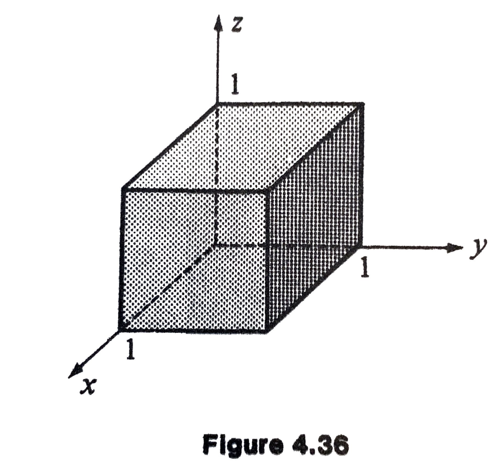

MATH 4100 - Vector Analysis
Jie Zhong
Department of Mathematics
California State University, Los Angeles
Chapter 4 Line, Surface, and Volume Integrals
4.1 Line Integrals
Definition
Let \(\mathbf{F}\) be a vector field that is continuous on the \(C^1\) curve \(\mathbf{R}: [a, b] \to \mathbb{R}^3\). We define the line integral of \(\mathbf{F}\) along \(\mathbf{R}\), by
that is, we integrate the scalar (dot) product of \(\mathbf{F}\) with \(\mathbf{R}'(t)\) over the interval \([a, b]\).
If \(\mathbf{F} = F_1 \mathbf{i} + F_2 \mathbf{j} + F_3 \mathbf{k}\), we have
Motivation
Consider \(\mathbf{F}\) is a force in space.
If \(\mathbf{F}\) is constant acting through a displacement \(\mathbf{D}\),
Question: What about the work done by \(\mathbf{F}\) along a curve \(\mathbf{R}\)?
Motivation - Continued
We can imagine that the curve is made up of a succession of infinitesimal straight-line displacement.
Then the work done in going from \(\mathbf{R}(t)\) to \(\mathbf{R}(t+\Delta t)\) is approximately

Motivation - Continued
If we subdivide the interval \([a, b]\) into \(n\) equal parts \(a = t_0 < t_1 < \cdots < t_n = b\), with \(\Delta t = t_{i+1} - t_i\), then the work done by \(\mathbf{F}\) is approximately
whose limit is given by the integral
Example 4.1
Let \(C\) be the curve \(y = \sqrt{x}\) in the \(xy\) plane extending from \((0, 0, 0)\) to \((1, 1, 0)\), and let \(\mathbf{F} = xy^2 \mathbf{i} + y^2 \mathbf{k}\). Find \(\displaystyle \int_C \mathbf{F} \cdot d \mathbf{R}\).
Solution
The curve can be parametrized \(x = t, y = \sqrt{t}, z = 0, 0 \le t \le 1\).
The line integral is
Example 4.2
Compute the line integral \(\displaystyle \int_C \mathbf{F} \cdot d \mathbf{R}\) from \((0, 0, 0)\) to \((1, 2, 4)\) if
(a) along the line segment joining these two points.
(b) along the curve given parametrically by \(x = t^2, y = 2t, z = 4t^3\).
Solution of (a)
The curve can be parametrized \(x = t, y = 2t, z = 4t, 0 \le t \le 1\).
The line integral is
Solution of (b)
In this case, we have
Example 4.3
Find the line integral of \(\mathbf{F} = x \mathbf{i} + x^2 \mathbf{j}\) from \((-1, 0)\) to \((1, 0)\) in the \(xy\) plane.
(a) along the \(x\) axis.
(b) along the semicircle \(y = \sqrt{1 - x^2}\).
(c) along the dotted polygonal path shown in Figure 4.4.

Solution of (a)
Along the \(x\) axis, \(y = 0\); hence \(dy = 0\), and
Solution of (b)
Along the semicircle, we use polar coordinate: \(x = \cos \theta, y = \sin \theta\); hence \(dx = - \sin \theta\, d\theta, dy = \cos \theta\, d\theta\), and \(\theta\) runs from \(\pi\) down to zero.
Solution of (c)
Along the path labeled (1) in Figure 4.4, \(y = x+1\), so that \(dy = dx\), and
Along the path labeled (2) in Figure 4.4, \(y =1\), so that \(dy = 0\), and
Along the path labeled (3) in Figure 4.4, \(x = 1\), so that \(dx = 0\), and
So the final answer of the integral is \(-1/6 +1/2 - 1 = -2/3\).
4.2 Domains; Simply Connected Domains
Definitions and Concepts
The distance between two points \(P\) and \(P_0\) in space is defined by
Let \(P_0\) be a point. The set of points \(P\) such that the distance
with some \(\varepsilon>0\), is called an open ball centered at \(P_0\) of radius \(\varepsilon\).
A region containing an open ball centered at a point \(P_0\) is called a neighborhood of \(P_0\).
Definitions and Concepts - Continued
- A point \(P\) is an interior point of a region \(R\) if there is a neighborhood of \(P\) contained in the region \(R\).
- A point \(P\) is an exterior point of a region \(R\) if there is a neighborhood of the point \(P\) that is entirely outside of the region \(R\).
- A point \(P\) is an boundary point of a region \(R\) if every neighborhood of the point \(P\) contains a point in \(R\) and a point outside \(R\).
- The set of all interior points of a region \(R\) is called the interior of \(R\).
- The set of all exterior points of a region \(R\) is called the exterior of \(R\).
- The set of all boundary points of a region \(R\) is called the boundary of \(R\), denoted by \(\partial R\).
Definitions and Concepts - Continued
- A region \(R\) is open if every point of the region \(R\) is an interior point.
- An open region does not contain any its boundary points and coincides with its interior.
- A region \(R\) is closed if it contains all its boundary points.
- An open region \(R\) is connected if any two points in \(R\) can be connected by a smooth arc that lies in \(R\).
- An open region \(R\) is disconnected if it is not connected.
- A disconnected region \(R\) contains at least two points that cannot be connected by a smooth arc lying in \(R\).
Definitions and Concepts - Continued
- A domain is an open connected region.
- We will consider below only open connected regions (domains).
- A domain \(R\) is simply connected if every closed curve in \(R\) can be continuously deformed to a point in \(R\) (without any parts of the curve passing through the exterior of the domain).
- On the plane \(\mathbb{R}^2\), a domain is simply connected if it does not have any holes.
- In the space \(\mathbb{R}^3\), a domain is simply connected if it does not have holes bored through it.
- More precisely, a domain \(R\) is simply connected if for any closed curve \(C\) in \(R\) there is a surface \(S\) in \(R\) such that the curve \(C\) is the boundary of the surface \(S\), i.e., \(C = \partial S\).
Examples
Simply connected
- Spherical shell (the set of points between two spheres): \(a^2 < x^2 + y^2 + z^2 < b^2\)
- Interior of cylinder: \(x^2 + y^2 < c^2\)
Not Simply connected
- Exterior of cylinder: \(x^2 + y^2 > c^2\)
4.3 Conservative Fields: The Potential Function
Motivation
Let’s consider a vector field \(\mathbf{F} = x^2 \mathbf{i} + y^2 \mathbf{j}\), and compute the line integrals along the following curves:
where
as well as \(C_4 : \mathbf{R}(t) = - \cos t \mathbf{i} + \sin t \mathbf{j}, \quad 0 \le t \le 2\pi\).
Motivation - Continued
Then
and
Motivation - Continued
Note:
- It is not a coincidence that the line integrals along curves \(C_1, C_2\) and \(C_3\) are the same.
- In fact, these integrals does not depend on the curve but only depends on the initial and the end points as follows:
\(\int_C \mathbf{F} \cdot d \mathbf{R} = f(1, 0, 0) - f(-1, 0, 0) = \frac{2}{3}\),
where \(f = (x^3 + y^3)/3\) such that \(\mathbf{F} = \mathbf{grad} f\). - The line integral of \(\mathbf{F}\) around a closed curve \(C\) is called the circulation of \(\mathbf{F}\) about \(C\), and denoted by \(\oint_C \mathbf{F} \cdot d \mathbf{R}\).
So we write \(\oint_{C_4} \mathbf{F} \cdot d \mathbf{R} =0\).
Definition
A continuous vector field \(\mathbf{F}\) is said to be conservative in a domain \(D\) if there is a scalar field \(\phi\) defined in \(D\) such that \(\mathbf{F} = \mathbf{grad}\, \phi\). If this is possible, then \(\phi\) is called a potential function, or simply a potential, for \(\mathbf{F}\).
Note: A potential for a conservative field is not unique, since one can always add an arbitrary constant to \(\phi\) to obtain a new potential \(\phi + C\) whose gradient is also \(\mathbf{F}\).
Theorem
A vector field \(\mathbf{F}\) continuous in a domain \(D\) is conservative if and only if the line integral of \(\mathbf{F}\) along every regular curve in \(D\) depends only on the initial and terminal points of the curve. In that case, the line integral is simply the difference in potential of the endpoints.
That is, we have
where \(\phi\) is the potential for \(\mathbf{F}\), \(P\) and \(Q\) are initial and terminal points of \(C\), respectively.
Corollary
A vector field \(\mathbf{F}\) continuous in a domain \(D\) is conservative if and only if the line integral of \(\mathbf{F}\) along every regular closed curve in \(D\) (i.e., its circulation) is zero.
Example 4.4
Show that \(\mathbf{F} = xy^2 \mathbf{i} + x^3 y \mathbf{j}\) is not conservative.
Solution
We can prove the vector field is not conservative by showing that its line integral does depend on the path.
We compute the line integral along two paths joining \((0, 0)\) to \((1, 1)\) in the \(xy\) plane.
Along the line \(y = x\), we have
Example 4.4 - Continue
Now let us move along the regular path consisting of two line segments, the first joining \((0, 0)\) to \((1, 0)\) and the second joining \((1, 0)\) to \((1, 1)\). Along the first line segment, \(y =0\), so that the line integral is zero. Along the second line segment, \(x=1\), so that \(dx =0\), and the integral becomes
The total of the two integrals is thus \(1/2\), differing from \(9/20\). Hence the field is not conservative.
Example 4.5
Show that \(\mathbf{F} = xy^2 \mathbf{i} + x^3 y \mathbf{j}\) is not conservative, without computing any integrals.
Proof
This can be done by contradiction.
Suppose \(\mathbf{F}\) were conservative. Then \(\mathbf{F} = \mathbf{grad}\, \phi\) for some scalar function \(\phi\), and thus,
This is impossible, since the mixed derivatives
are not the same.
Example 4.6
Show that \(\mathbf{F} = 3x^2 y \mathbf{i} + (x^3 + 1) \mathbf{j} + 9 z^2 \mathbf{k}\) is conservative.
Proof
- We will find a \(\phi\) such that \(\mathbf{F} = \nabla \phi\).
- Suppose this is true, then
\(\displaystyle \frac{\partial \phi}{\partial x} = 3x^2y, \quad \frac{\partial \phi}{\partial y} = x^3 + 1, \quad \frac{\partial \phi}{\partial z} = 9z^2\). - \(\displaystyle \frac{\partial \phi}{\partial x} = 3x^2y\) implies that \(\phi = x^3y + g(y, z)\).
- \(\displaystyle \frac{\partial \phi}{\partial y} = x^3 + 1\) implies that \(g(y, z) = y + h(z)\).
- \(\displaystyle \frac{\partial \phi}{\partial z} = 9z^2\) implies that \(h(z) = 3z^3 + C\).
- Finally \(\phi = x^3 y + y + 3z^3 + C\).
4.4 Conservative Fields: Irrotational Fields
Conservative Fields: Summary
If \(\mathbf{F}\) is a continuous vector field in a domain \(D\). The following statements are equivalent:
- \(\mathbf{F}\) is conservative.
- There is a scalar field \(\phi\) such that \(\mathbf{F} = \nabla \phi\).
- The line integral \(\int_C \mathbf{F}\cdot d \mathbf{R}\) along any regular curve \(C\) in \(D\) only depends on the endpoints of the curve \(C\), but independent of the path.
- The circulation of \(\mathbf{F}\) along any regular closed curve is zero: \(\oint_C \mathbf{F} \cdot d\mathbf{R} = 0\).
Irrotational Fields
Recall that a vector field \(\mathbf{F}\) is irrotational if \(\mathbf{curl}\, \mathbf{F} = \mathbf{0}\).
We also note that any gradient field is curl free.
Therefore,
Question: Is every irrotational field conservative?
Answer: It depends on the domain. Only in a simply connected domain.
Theorem
A vector field \(\mathbf{F}\) defined and continuously differentiable in a simply connected domain \(D\) is conservative if and only if \(\mathbf{curl \, F} = \mathbf{0}\) throughout \(D\).
In practice, if \(\mathbf{F} = F_1 \mathbf{i} + F_2 \mathbf{j} + F_3 \mathbf{k}\) is defined in a simply connected domain \(D\), to determine whether it is conservative consists of checking whether all the following are valid:
Example
Show the vector field \(\mathbf{F} = y \mathbf{i} + x \mathbf{j} + x^2 \mathbf{k}\) is not conservative.
Proof
- \(\displaystyle \frac{\partial}{\partial y}(y) = \frac{\partial}{\partial x}(x)\).
- \(\displaystyle \frac{\partial}{\partial z}(x) = \frac{\partial}{\partial y}(x^2)\).
- \(\displaystyle \frac{\partial}{\partial z}(y) \neq \frac{\partial}{\partial x}(x^2)\).
- Thus, the curl of \(\mathbf{F}\) is not zero, and so \(\mathbf{F}\) is not conservative.
Example 4.7
Show that \(\mathbf{F} = 2xy \mathbf{i} + (x^2 + 1) \mathbf{j} + 6z^2 \mathbf{k}\) is conservative.
Proof
- \(\displaystyle \frac{\partial F_1}{\partial y} = \frac{\partial F_2}{\partial x} = 2x\)
- \(\displaystyle \frac{\partial F_2}{\partial z} = \frac{\partial F_3}{\partial y}=0\)
- \(\displaystyle \frac{\partial F_1}{\partial z} = \frac{\partial F_3}{\partial x}=0\).
Example
Is the vector field
conservative?
- We computed \(\mathbf{curl \, F} = \mathbf{0}\).
- However, the line integral around the curve specified in Exercise 4 of Sec 4.3 is \(2\pi\), but not zero.
- What’s the problem here? Does this contradict the theorem?
- Note that \(\mathbf{F}\) fails to be defined on the \(z\) axis, where \(x^2+y^2=0\), and thus the domain \(D\) is not simply connected.
4.6 Oriented Surface
Orientation of Surfaces
- Recall that a curve is smooth if has a well-defined smooth nowhere vanishing tangent vector.
- A surface \(S\) is smooth if it has a well-defined tangent space, that is, a smooth nowhere vanishing normal vector.
- A surface is piecewise smooth if it consists of a finite number of smooth parts “joined together”.
- For example, the surface of a sphere is smooth, whereas the surface of a cube is piecewise smooth.
Orientation of Surfaces - Continued

- At every point of a smooth surface there will be two choices for the unit normal, an inward-pointing normal and an outward-pointing normal.
- Orienting a surface means choosing a normal.
- An oriented surface always has two sides, a positive side and a negative side.
- The choice of a normal also fixes the positive (counter-clockwise) direction for the angles.
- The orientation of a surface induces an orientation of its boundary by the right-handed rule.
Orientation of Surfaces - Continued

- The orientation of different pieces of the surface must be consistent, that is, the orientation along the common edges must be opposite.
- A surface without boundary is called closed.
- There is a common convention to orient the closed surfaces by choosing the outward-pointing normal.
Orientation of Surfaces - Continued
There are surfaces (called non-orientable) that cannot be oriented. They have only one side. For example, the Mobius strip.
Note: Surface integrals can be only defined for oriented surfaces. We will only consider orientable surfaces.
Parametrizations of Surfaces
Recall that a space curve can be parametrized as a vector function of a single variable \(t\).
A surface \(S\) can be parametrized by two parameters \(u\) and \(v\):
or equivalently,
Example 4.13
In Section 1.10 we saw that points \(\mathbf{R}\) on the plane through \(\mathbf{R}_0\) and parallel to \(\mathbf{A}\) and \(\mathbf{B}\) could be expressed by
This is a parametric representation, with \(u\) and \(v\) taken as \(s\) and \(t\).
If the plane were described by a nonparametric equation
then a parametrization would be
as long as \(c = \neq 0\).
Example 4.14
For a sphere of radius \(a\), the parametrization in terms of the coordinates \(\phi\) and \(\theta\) is given by

Example 4.15
For a cylinder of radius \(a\) is parametrized in terms of \(\theta\) and \(z\) by

Example 4.16
A cone as a surface is parametrized in terms of \(r\) and \(\theta\) by
where \(\phi_0\) is the angle of the cone (a constant).

Parametric Equations of Revolutions
The parametric equation of any surface of revolution or “axially symmetric” surface can be expressed as
when the surface is generated by rotating the graph of \(z = f(x)\) about the \(z\) axis.

Coordinate Curves
As the parameters \(u\) and \(v\) vary, the tip of the position vector \(\mathbf{R}(u, v)\) generates the surface.
In particular, if we fix the value \(u = u_0\) or \(v = v_0\), then we obtain the coordinate curves lying in the surface:

Coordinate Curves - Continued
The tangent vectors to the coordinate curves are
Note: Here we assume the relevant derivatives exist, and that \(\partial \mathbf{R}/\partial u\) and \(\partial \mathbf{R}/\partial v\) are nonzero and non-parallel at every point.
Normal Vector to the Surface
- If a surface is specified nonparametrically by \(f(x, y, z) = C\), then \(\mathbf{grad} f\) is a normal vector to the surface.
- If the surface is parametrically through \(\mathbf{R}(u, v)\), then the vector \(\displaystyle \frac{\partial \mathbf{R}}{\partial u} \times \frac{\partial \mathbf{R}}{\partial v}\) is normal to the surface.
Example 4.17
Write the equation for the plane tangent to the surface given by
at the point corresponding to \(u = 1, v = 2\).
Solution
The point corresponding to \(u = 1, v=2\) is \(\mathbf{R}_0 = \mathbf{i} + 2 \mathbf{j} + 2\mathbf{k}\).
The tangent vectors to the coordinate curves are
Example 4.17 - Continued
Hence a normal to the plane is given by:
The (nonparametric) equation of the tangent plane is
Surface Area
Let’s consider a regular surface element bounded by coordinate curves in Figure 4.31.
The area of the surface element can be approximated by the area of the parallelogram, which can be computed by the cross product:

Surface Area
The area of the surface element is
so that
where,
is a vector normal to the surface, and \(\mathbf{n}\) is a unit normal vector in the same direction as \(d \mathbf{S}\).
Example 4.18
Find the surface area of the cylinder defined by the equations
for \(0 \le \theta \le 2 \pi, 0 \le z \le 1\).
Solution
Identifying \(\theta\) with \(u\) and \(z\) with \(v\), we have
Example 4.18 - Continued
Thus, the surface area is
Special Case
Consider the surface is described by \(z = f(x, y)\), where the projection of the surface element on the \(xy\) plane is bounded by the curves
We can parametrize via the equations \(x = u, y = v\), and \(z = f(u, v)\) in order to make use of the preceding formulas:
Special Case - Continued
Then
Therefore, the surface area is
Special Case - Continued
Note: The geometrical significance of this formula for the special case is seen by considering the angle \(\gamma\) between \(d \mathbf{S}\) and \(\mathbf{k}\):
so that the surface area can also be computed as

Example 4.19
Find the area of hemisphere defined by
Solution 1
- The area is the same as the one with \(z \ge 0\).
- As in Example 4.14, we parametrize the surface as follows:
\(x = \sin \phi \cos \theta, y = \sin \phi \sin \theta, z = \cos \phi\), with \(0 \le \theta \le 2 \pi\) and \(0 \le \phi \le \pi/2\). - Using Formula (4.31) (Exercise 8 in Sec 4.6), we have \(dS = \sin \phi\, d\phi\, d\theta\).
- Thus, the surface area is \(\displaystyle \int_0^{2\pi} \int_0^{\pi/2} \sin\phi\, d\phi\, d\theta = 2\pi\).
Example 4.19 - Continued
Solution 2
- Note: \(\gamma\) is the angle between \(d \mathbf{S}\) and \(\mathbf{i}\), and it is the same angle between the gradient of the surface and \(\mathbf{i}\), since \(d \mathbf{S}\) and the gradient are both normal to the surface.
- \(\nabla (x^2+y^2+z^2) = 2x \mathbf{i} + 2y \mathbf{j} + 2z \mathbf{k}\).
- \(\displaystyle \cos \gamma = \frac{(2x \mathbf{i} + 2y \mathbf{j} + 2z \mathbf{k}) \cdot \mathbf{i}}{(4x^2 + 4y^2 + 4z^2)^{1/2}} = \frac{2x}{2} = x\).
- Then the area is \(\displaystyle \int_{-1}^1 \int_{-(1-z^2)^{1/2}}^{+(1-z^2)^{1/2}} x^{-1}\, dy \, dz = 2\pi\).
4.7 Surface Integrals
Surface Integral of Scalar Field
Let \(S\) denote a smooth surface and let \(f(x, y, z)\) be a function defined and continuous on \(S\). Then the surface integral of \(f\) over \(S\) is defined by
If the surface \(S\) is parametrized by \(\mathbf{R} = \mathbf{R}(u, v)\), then
Surface Integral of Vector Field
A surface integral of a continuous vector field \(\mathbf{F}\) over a smooth surface \(S\) is defined by
which also is called the total flux of \(\mathbf{F}\) through \(S\).
Surface Integral of Vector Field - Continued
If the surface is described explicitly by \(z = f(x, y)\), then the total flux is
If the surface is piecewise smooth, then the surface integral is obtained by summing over all smooth pieces of the surface.
Example 4.20
Compute the flux of the vector field \(\mathbf{F} = \mathbf{i} + xy \mathbf{j}\) across the surface given by
Solution
Example 4.21
Compute the surface integral \(\displaystyle \iint_S \mathbf{F} \cdot d \mathbf{S}\) when \(S\) is the surface of the sphere \(x^2 + y^2 + z^2 = 4\), and \(\mathbf{F} = x \mathbf{i} + y \mathbf{j} + z \mathbf{k}\).
Solution
- Key observation: \(\mathbf{F}\) and \(\mathbf{n}\) have the same direction, pointing away from the origin.
- \(\mathbf{F} \cdot \mathbf{n} = |\mathbf{F}| = (x^2 + y^2 + z^2)^{1/2} = 2\).
- \(\displaystyle \iint_S \mathbf{F}\cdot d \mathbf{S} = \iint_S \mathbf{F}\cdot \mathbf{n}\, dS = \iint_S 2\, dS\).
- \(\displaystyle \iint_S \, dS = ~\text{total surface area}~ = 4 \pi 2^2 = 16 \pi\).
- Therefore, the surface integral is \(32\pi\).
- Note: In this example, no integration is needed since \(\mathbf{F} \cdot \mathbf{n}\) is a constant over the entire surface.
Example 4.22
Compute the surface integral \(\displaystyle \iint_S \mathbf{F} \cdot d \mathbf{S}\) when \(S\) is the surface of the cube bounded by the planes \(x=0, x=1, y=0, y=1, z =0, z = 1\), and \(\mathbf{F} = x \mathbf{i} + y \mathbf{j} + z \mathbf{k}\).

Example 4.22 - Continued
Solution
- The unit normal to the front face \(S_1\) is \(\mathbf{n} = \mathbf{i}\).
- \(\mathbf{F} \cdot \mathbf{n} = (x \mathbf{i} + y \mathbf{j} + z \mathbf{k}) \cdot \mathbf{i} = x =1\) on the front face.
- \(\displaystyle \iint_{S_1} \mathbf{F} \cdot d \mathbf{S} = \iint_{S_1} \mathbf{F} \cdot \mathbf{n} \, dS = \iint_{S_1}\, dS = 1\).
- On the opposite face \(S_2\) (in the \(yz\) plane), \(\mathbf{n} = - \mathbf{i}\), so that \(\mathbf{F} \cdot \mathbf{n} = - x\).
- However, \(x = 0\) for all points on the face \(S_2\), so the surface integral is zero.
- Similarly, we can compute the surface integrals over other faces.
- By symmetry, we conclude that the total flux is \(3\).
Example 4.23
Compute the surface integral of the normal component of \(\mathbf{F} = x^2 \mathbf{i} + y x \mathbf{j} + zx \mathbf{k}\) over the triangle with vertices \((1, 0, 0), (0, 2, 0), (0, 0, 3)\). Consider the triangle oriented such that its positive side is that away from the origin.
Example 4.23 - Continued
Solution
First, we can find the normal vector to the triangle:
and thus
Example 4.23 - Continued
Note that on the triangle, we have \(z = 3 - 3x - (3/2)y\), so we can use the formula
where
Example 4.23 - Continued
Therefore, the surface integral is
4.8 Volume Integrals (Review)
Definition
Let \(V\) be domain, and consider a (scalar) function \(f\) defined within and on the boundary of \(V\). Then the volume integral of \(f\) over the domain \(V\) is
In particular, if \(f \equiv 1\), the volume integral becomes the volume of the domain \(V\):
Note: The tricky part of volume integration is to setup the limits of the “partial integrals”.
Example 4.28
Find the volume integral of \(f(x, y, z) = x + yz\) over the box bounded by the coordinate planes, \(x =1, y =2\), and \(z=1 +x\).
Example 4.28 - Continued
Solution 1
Integrating in the order of \(dz, dx, dy\):
Example 4.28 - Continued
Solution 1
Integrating in the order of \(dz, dx, dy\):
Example 4.28 - Continued
Solution 2
Integrating in the order of \(dz, dy, dx\):
Example 4.28 - Continued
Solution 2
Integrating in the order of \(dz, dy, dx\):
Example 4.28 - Continued
Solution 3
Integrating in the order of \(dy, dz, dx\):
Example 4.28 - Continued
Solution 3
Integrating in the order of \(dy, dz, dx\):
Example 4.28 - Continued
Solution 4
Integrating in the order of \(dx, dy, dz\):
Example 4.28 - Continued
Solution 4
Integrating in the order of \(dx, dy, dz\):
Example 4.29
Find the volume of the region of space above the \(xy\) plane and beneath the plane \(z = 2 + x + y\), bounded by the planes \(y = 0, x = 0\), and the surface \(y = 1 - x^2\).
Example 4.29 - Continued
Solution
We hold \(x\) fixed and vary \(y\), the columns generate slices from \(y =0\) to \(y = 1 - x^2\). Stacking up these slices for \(0\le x \le 1\), we find
Example 4.30
Find the integral of \(f(x, y, z) = y\) over the volume of the sphere contained inside \(x^2+y^2+z^2 = 1\).
Solution
For a sphere we can integrate equally well in any order. Hence,
4.9 Introduction to the Divergence Theorem and Stokes Theorem
Example
Let \(\mathbf{F} = f(r) \mathbf{R}\) be a vector field, where \(f\) is a smooth scalar field, \(\mathbf{R}= x \mathbf{i} + y \mathbf{j} + z \mathbf{k}\), and \(r = |\mathbf{R}|\).
We compute the divergence of \(\mathbf{F}\),
Example - Continued
Let \(D\) be a ball of radius \(a\) centered at the origin, which can be parametrized in spherical coordinates by
The volume element in spherical coordinates (see 3.65 on page 165) is
Example - Continued
We compute the volume integral
Notice that the integral does not depend on the values of the function \(f\) inside the ball; but it only depends on its value at the boundary \(\partial D\).
The boundary \(\partial D\) of the ball \(D\) is a sphere of radius \(a\).
Example - Continued
The unit normal to the sphere is \(\mathbf{n} = \mathbf{R}/a\).
Now, let us compute the flux of \(\mathbf{F}\) through the boundary:
Divergence Theorem
The volume integral of the divergence of a vector field, taken throughout a bounded domain \(D\), equals the surface integral of the normal component of the vector field taken over the surface \(S\) bounding \(D\).
Roughly speaking, the total divergence within \(D\) equals the net flux emerging through \(D\)’s “skin”.
Divergence Theorem - Continued
Exercise 4.7.1
If \(\mathbf{F} = z \mathbf{k}\) , find the surface integral of the normal component of \(\mathbf{F}\) over the closed surface of the right circular cylinder with curved surface \(x^2 + y^2 = 9\) and bases in the planes \(z =0\) and \(z = 2\). (Mental arithmetic should suffice).
Exercise 4.7.1 - Continued
Solution 1
The surface can be split into three smooth parts \(S = S_1 \cup S_2 \cup S_3\), where \(S_1\) is the top, \(S_2\) is the side, and \(S_3\) is the bottom.
Note that \(\mathbf{F}= \mathbf{0}\) on \(S_3\), \(\mathbf{F}\) is parallel to \(d \mathbf{S}\) on \(S_1\), and \(\mathbf{F}\) is perpendicular to \(d \mathbf{S}\) on \(S_2\), so
Exercise 4.7.1 - Continued
Solution 2
Since \(\mathbf{F} = z \mathbf{k}\), we have \(\nabla \cdot \mathbf{F} = 1\), and by the divergence theorem,
Stokes’ Theorem
The surface integral of the normal component of the curl of a vector field, taken over a bounded surface \(S\), equals the line integral of the tangential component of the field, taken over the closed curve \(C\) bounding the surface.
Roughly speaking, the Stokes’ theorem states that the total flux of the curl equals the line integral around the edge.
Stokes’ Theorem - Continued
Exercise 4.1.4
Find the value of
around the circle \(x^2 + y^2 = 4\).
Exercise 4.1.4 - Continued
Solution 1
Let \(x = 2 \cos \theta, y = 2 \sin \theta\) ,then \(dx = - 2 \sin\theta\, d\theta, dy = 2 \cos \theta\, d \theta\).
Exercise 4.1.4 - Continued
Solution 2
Note \(\mathbf{F} = (3x + 4 y) \mathbf{i} + (2x + 3 y^2) \mathbf{j}\), so
By the Stokes’ theorem,